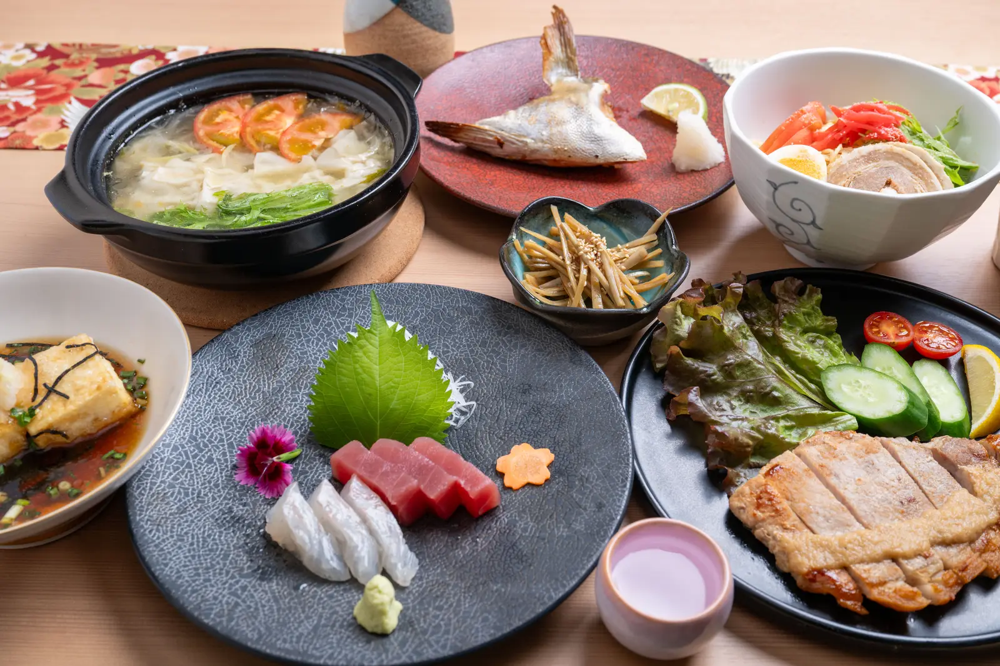

包丁ひとつで、
素材の声を聴く。
その日いちばんの魚を見極め、身の状態に合わせて引き方を変える。焼くか、煮るか、生で味わうか。素材がいちばん輝く仕立てを、毎日の仕込みの中で探しています。
派手な飾りより、ひと口目の「おいしい」を大切に。九州で育った食材と酒の組み合わせで、肩の力を抜いて過ごせる時間をお届けします。
お品書き
お造りから焼き物、揚げ物、鍋まで。季節と仕入れに合わせて、その日のお品書きをご用意しています。
※ 掲載のお料理は一例です。仕入れにより内容が変わります。
料理に寄り添う、
九州の地酒。
芋・麦・米と個性豊かな九州の焼酎に、蔵元の顔が見える日本酒。お造りには香りの穏やかな一杯を、焼き物にはしっかりとした一杯を。料理に合わせた選び方も、お気軽にお尋ねください。
食後にはウイスキーもご用意しています。
白木のカウンターで、
くつろぎのひとときを。
-
おひとりで
カウンター越しに料理の話をしながら、気ままに一杯。仕事帰りにふらりとお立ち寄りください。
-
ご友人・ご家族と
テーブル席で大皿を囲んで。季節の料理を少しずつ分け合うのも楽しみのひとつです。
-
会食・お祝いに
大切な方との食事や記念日にも。ご予算やご要望は、ご予約の際にご相談ください。
店舗案内
- 店名
- 旬の九州 よか
- 住所
- 〒830-0017 福岡県久留米市日吉町14-36 原口ビル
- 営業時間
- 月・火・木・金・土 17:00 – 23:00 （L.O. 料理 22:00 / ドリンク 22:30）
- 定休日
- 水曜日・日曜日・1月1日
- 席
- カウンター席・テーブル席
- アクセス
- JR久留米駅より徒歩10分 西鉄久留米駅より徒歩10分 六ツ門・シティプラザ前バス停より徒歩2分 西鉄久留米駅から約800m
- 駐車場
- 無 （近隣にコインパーキング有り）
- お支払い
- クレジットカード VISA、Mastercard、JCB、アメリカン・エキスプレス、ダイナースクラブ、Discover Card、三菱UFJカード、銀聯 電子マネー・QR決済 Suica、PASMO、ICOCA、楽天Edy、楽天ペイ、PayPay、QUICPay、au PAY